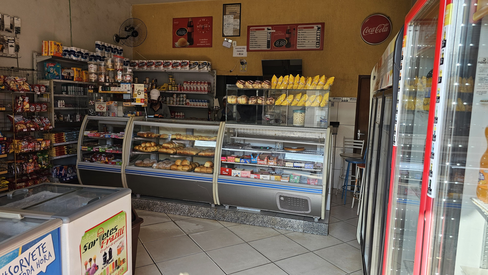

Nossa História de Sabor e Tradição
Desde 1996, a Panificadora Boa Vista tem o orgulho de fazer parte da vida e da história de Guaratinguetá. Nossa jornada é marcada pela paixão em servir pães frescos, produtos de qualidade e um atendimento que acolhe gerações de famílias.
Fachada atual da nossa querida panificadora.
1996 - O Início de um Sonho
Fundada pela Sra. Geralda e sua família, a Panificadora Boa Vista nasceu como uma pequena padaria de bairro, com o firme propósito de oferecer os melhores pães e um atendimento caloroso à comunidade local.
2005 - Crescendo com a Cidade
Com o reconhecimento dos clientes, ampliamos nosso espaço físico. Foi nesse período que incluímos a seção de mercearia, atendendo aos pedidos para que pudessem encontrar ainda mais conveniência em um só lugar.
2015 - Renovação e Qualidade
Investimos em equipamentos mais modernos, sempre com o cuidado de manter a essência artesanal de nossas receitas. Ampliamos nossa variedade de produtos, incluindo doces finos e salgados especiais que se tornaram sucesso.
Hoje - Tradição que se Renova
Continuamos com o mesmo compromisso de qualidade e atendimento que nos define desde o início. Temos a alegria de atender filhos e netos de nossos primeiros clientes, mantendo viva a tradição que passa de geração em geração.
Nossos Pilares
Missão
Oferecer produtos de panificação e mercearia de alta qualidade, com sabor autêntico e atendimento excepcional, mantendo a tradição artesanal e contribuindo para momentos felizes na vida de nossos clientes.
Visão
Ser reconhecida como a panificadora de referência em Guaratinguetá pela excelência em produtos, atendimento e tradição, inovando continuamente sem perder nossos valores fundamentais.
Valores
- Qualidade Inegociável
- Respeito aos Clientes
- Tradição e Inovação
- Compromisso com a Comunidade
- Ambiente Familiar
Nossa Equipe Dedicada
O coração da Panificadora Boa Vista é nossa equipe. Contamos com colaboradores apaixonados pelo que fazem, incluindo padeiros experientes, confeiteiros talentosos e atendentes que recebem a todos com um sorriso. Muitos estão conosco há mais de uma década, o que reflete nosso ambiente de trabalho familiar e acolhedor.
O Que Dizem Nossos Clientes
"A Panificadora Boa Vista faz parte da minha vida desde criança. Os pães têm o mesmo sabor maravilhoso de décadas atrás! É tradição que a gente confia."
- Carlos S., cliente há 25 anos
"Adoro o atendimento familiar e a qualidade dos produtos. Tudo é feito com muito capricho. Minha família sempre compra aqui e recomenda!"
- Ana P., cliente há 10 anos